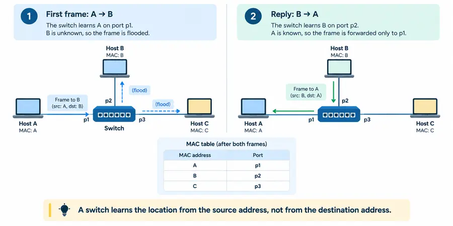

Chapter 4 · Ethernet and Local Networks
Part I — From Signals to Local Networks
How does a host deliver a packet to another machine on the same local network?

Download chapter + laboratory for offline study (.zip)lesson + guided practice + knowledge check + laboratory + required files
Why this chapter matters
Section titled “Why this chapter matters”IP can decide that a packet should leave through a particular interface and next hop, but that decision still has to become local delivery on a real link.
On an Ethernet-style LAN, two different kinds of state cooperate:
- the host maintains neighbor information such as IP-to-link-address mappings,
- the switch maintains forwarding information such as MAC-to-port mappings.
Confusing those tables is one of the fastest ways to become lost while debugging a LAN.
Pause and predict. Your laptop wants to send an IP packet to a server on another continent. Which MAC address does the first Ethernet frame normally use as its destination: the remote server’s, the local gateway’s, or both?
1. Ethernet delivery is local to a link-layer domain
Section titled “1. Ethernet delivery is local to a link-layer domain”An Ethernet frame carries a source MAC address, a destination MAC address, and a payload such as an IPv4 or IPv6 packet.
The frame is meaningful on the current Ethernet domain. When a router forwards the enclosed IP packet onto another Ethernet link, it constructs a new frame appropriate to that next hop.
Therefore:
Ethernet frame: local-hop delivery
IP packet: network-layer destination across hopsThis distinction is the foundation for understanding switches, ARP, neighbor caches, and routing boundaries.
2. Unicast, broadcast, and unknown unicast are different cases
Section titled “2. Unicast, broadcast, and unknown unicast are different cases”A unicast frame names one destination MAC address.
Ethernet broadcast uses:
ff:ff:ff:ff:ff:ffA simple switch floods broadcast frames throughout the broadcast domain, subject to real network controls.
An unknown unicast is different: it has one specific destination MAC, but the switch has not yet learned which port reaches that address. A basic learning switch also floods this case because it lacks better forwarding information.
So both can produce flooding, but for different reasons:
broadcast → intentionally addressed to everyone
unknown unicast → one destination, location not yet learned3. A learning switch builds topology knowledge from source addresses
Section titled “3. A learning switch builds topology knowledge from source addresses”Suppose a switch has ports p1, p2, and p3.
For each received frame, a simple learning algorithm is:
1. learn source_MAC → ingress_port
2. inspect destination MAC
3. broadcast? flood other ports
4. destination unknown? flood other ports
5. destination on ingress? filter
6. otherwise forward to learned portWhy learn from the source?
Because receiving a frame on p2 is direct evidence that the source address is reachable through p2. The destination address says where the sender wanted the frame to go, not where that destination actually resides.
Pause and predict. An empty switch receives
A → Bonp1. What does it learn immediately? What can it infer about B?
It can learn A → p1. It cannot yet infer B’s port, so it floods the frame.
4. Worked example — the table gets smarter after each frame
Section titled “4. Worked example — the table gets smarter after each frame”Start with an empty table.
Frame 1: A → B enters on p1
Section titled “Frame 1: A → B enters on p1”Learn:
A → p1B is unknown, so the frame is sent out p2 and p3.
Frame 2: B → A enters on p2
Section titled “Frame 2: B → A enters on p2”Learn:
A → p1
B → p2A is already known, so only p1 receives the frame.
Frame 3: C → A enters on p3
Section titled “Frame 3: C → A enters on p3”Learn:
A → p1
B → p2
C → p3A is known, so the frame goes only to p1.
The switch has built useful forwarding state without a host-registration protocol. Ordinary traffic taught it enough topology to reduce flooding.
5. Learned state must change when the network changes
Section titled “5. Learned state must change when the network changes”Suppose A disconnects from p1 and later sends from p3.
The next source-learning event should update:
A → p3Real switches also age stale entries because hosts move, links change, and old observations eventually become unreliable.
The course lab omits wall-clock aging so its forwarding behavior remains deterministic. The conceptual lesson still matters: cached forwarding state has a lifetime and can become stale.
6. ARP solves a different problem from switch learning
Section titled “6. ARP solves a different problem from switch learning”A host has chosen an IPv4 next-hop address, but Ethernet transmission needs a destination MAC address.
If the mapping is not cached, ARP can ask the local link:
Ethernet destination: ff:ff:ff:ff:ff:ff
ARP: Who has 192.0.2.10? Tell 192.0.2.20The owner can reply, allowing the requester to learn:
192.0.2.10 → 02:00:00:00:00:10Notice the two independent caches:
host neighbor cache: next-hop IP → MAC
switch forwarding: MAC → portThe first helps a host construct a frame. The second helps a switch choose where to send that frame.
7. ARP fields and Ethernet fields must not be collapsed into “source” and “destination”
Section titled “7. ARP fields and Ethernet fields must not be collapsed into “source” and “destination””An ARP message is carried inside an Ethernet frame. During analysis, distinguish:
- Ethernet source MAC,
- Ethernet destination MAC,
- ARP sender hardware address,
- ARP sender protocol address,
- ARP target hardware address,
- ARP target protocol address.
This sounds pedantic until malformed, stale, or spoofed control traffic appears. Precise field names prevent incorrect conclusions.
8. The next hop is not necessarily the final IP destination
Section titled “8. The next hop is not necessarily the final IP destination”Suppose:
host: 192.0.2.20/24
gateway: 192.0.2.1
server: 198.51.100.50The server is outside the local /24, so the routing decision selects the gateway as next hop.
The host resolves:
192.0.2.1 → gateway MACnot the remote server’s MAC.
The first frame therefore looks conceptually like:
Ethernet destination = gateway MAC
IP destination = 198.51.100.50The Ethernet frame ends at the router. The router extracts the IP packet, makes a new forwarding decision, and places that packet into a new link-layer frame for the next link.
Worked reasoning rule: first choose the IP next hop; only then ask how that next hop is reached on the local link.
9. Neighbor caches improve efficiency but create stale-state problems
Section titled “9. Neighbor caches improve efficiency but create stale-state problems”Resolving every next hop for every packet would be wasteful, so hosts cache neighbor information.
Cached state introduces familiar systems concerns:
- expiration,
- mobility,
- conflicting observations,
- stale mappings,
- trust.
On Linux:
ip neighshows neighbor state and often its reachability status.
This is another example of a general distributed-systems pattern: caching makes the common path fast, but correctness becomes dependent on invalidation and freshness.
10. IPv6 uses Neighbor Discovery instead of ARP
Section titled “10. IPv6 uses Neighbor Discovery instead of ARP”IPv6 does not use ARP. Neighbor Discovery uses ICMPv6 and covers functions including neighbor resolution, router discovery, and reachability-related state.
The transferable concept is more important than memorizing one packet format:
IP forwarding decision
↓
selected next hop
↓
local link-layer resolution / reachability
↓
frame transmissionIPv4/ARP and IPv6/NDP implement that pattern differently.
11. Loops turn flooding from useful fallback into a failure mode
Section titled “11. Loops turn flooding from useful fallback into a failure mode”Learning assumes that flooding eventually reaches the destination without circulating forever.
With redundant Ethernet links, a naive layer-2 topology can create loops. Broadcast and unknown-unicast frames may be duplicated and circulate repeatedly, consuming shared capacity and destabilizing the network.
Production Ethernet therefore needs a strategy such as:
- loop-avoidance/control protocols,
- deliberately loop-free topology,
- or architectures that move multipath behavior to another layer.
This is why “add another cable for redundancy” is not automatically safe at layer 2.
12. VLANs create separate logical link-layer domains
Section titled “12. VLANs create separate logical link-layer domains”A physical switch can support multiple logical Ethernet domains using VLANs.
That means MAC learning is not simply one global mapping for every frame on the device. Forwarding state is normally scoped by VLAN or an equivalent context.
VLANs help isolate broadcast domains and administrative groups, but they do not remove the need to reason about routing between those domains.
13. Observe the mechanism on a real host
Section titled “13. Observe the mechanism on a real host”Interface state
Section titled “Interface state”ip linkNeighbor state
Section titled “Neighbor state”ip neighPacket evidence
Section titled “Packet evidence”Capture an ARP exchange when permitted and ask:
- Is the request’s Ethernet destination broadcast?
- Which host claims the target IP?
- Is the reply broadcast or unicast?
- Does the neighbor table change after the exchange?
The goal is to correlate wire evidence with host state, not merely identify packet names.
14. Failure boundaries become clearer once the two tables are separated
Section titled “14. Failure boundaries become clearer once the two tables are separated”Wrong or stale neighbor mapping
Section titled “Wrong or stale neighbor mapping”The host has a plausible IP route but constructs frames for the wrong MAC.
Wrong or stale switch entry
Section titled “Wrong or stale switch entry”The frame is correctly addressed, but the switch forwards it toward the wrong port until relearning or aging repairs the state.
ARP/NDP resolution failure
Section titled “ARP/NDP resolution failure”The host knows which next-hop IP it wants but cannot establish usable local-link delivery.
Layer-2 loop or broadcast storm
Section titled “Layer-2 loop or broadcast storm”Repeated/flooded traffic consumes shared capacity and can overwhelm devices.
These symptoms can look similar from an application, but the evidence and corrective action differ.
15. Local control state has a trust model
Section titled “15. Local control state has a trust model”Classic ARP does not provide cryptographic authentication of a mapping claim. A network therefore cannot assume that every received mapping is trustworthy merely because it is syntactically valid.
Operational networks may add segmentation, inspection, static configuration, switch controls, or higher-layer encryption depending on the threat model.
The course lesson is architectural:
Any control mechanism that accepts remote state must have an explicit trust model.
Chapter summary
Section titled “Chapter summary”Keep these two state machines separate in your head:
- Host neighbor state maps next-hop network addresses to local link addresses.
- Switch forwarding state maps observed link addresses to switch ports.
- Switches learn from source addresses because ingress gives evidence about source reachability.
- Broadcast and unknown unicast can both flood, but for different reasons.
- A remote IP destination usually does not imply a remote MAC destination on the first hop.
- Routers replace link-layer framing as packets cross links.
- Cached state can become stale; redundant layer-2 paths can create loops.
- Local control protocols depend on trust assumptions.
Before continuing, explain exactly what changes and what remains logically stable when one IP packet crosses a router between two Ethernet LANs.
Systems connections
Section titled “Systems connections”The host kernel owns interface and neighbor state and decides when local resolution is required.
[ARCH]
Section titled “[ARCH]”NICs and switches can perform filtering and forwarding in hardware, while drivers and DMA connect frames to host memory.
[DIST]
Section titled “[DIST]”Neighbor and forwarding caches are distributed cached state that may become stale after movement or topology change.
ARP/NDP and other local control mechanisms require explicit trust assumptions and defensive network design.
[PERF]
Section titled “[PERF]”Learning reduces unnecessary flooding; loops and oversized broadcast domains consume shared capacity.
Self-check
Section titled “Self-check”Without looking back:
- Why does a learning switch update its table from the source MAC?
- What does a fresh switch do with unknown unicast, and why?
- Distinguish a host neighbor cache from a switch forwarding table.
- Why does a host usually resolve its gateway rather than a remote Internet server’s MAC?
- Which headers/addresses are replaced when a router forwards an IP packet onto another Ethernet link?
- Explain one way cached link-layer state can become stale.
Then run the M04 switch/ARP tests and correlate the deterministic model with local ip neigh or packet-capture evidence.
Guided practice
Section titled “Guided practice”Time: 10–12 minutes
Materials: paper or a text editor; no Internet access required
Prediction
Section titled “Prediction”A learning switch has three ports. Host A is on port 1, B on port 2, and C on port 3. The switch table starts empty.
Predict what the switch does with the first frame A → C: does it drop, flood, or send to one known port? Also write which address the switch learns from that frame.
Worked example
Section titled “Worked example”A learning switch learns from the source MAC address of each received frame. It uses the destination MAC address to decide where to send the frame.
For the first A → C frame:
receive on port 1
learn A → port 1
destination C is unknown
flood to ports 2 and 3If C replies C → A, the switch learns C → port 3 and can send that reply only to port 1.
Guided micro-experiment
Section titled “Guided micro-experiment”Starting with an empty table, process this sequence manually:
1. A → C arrives on port 1
2. C → A arrives on port 3
3. B → C arrives on port 2
4. A → B arrives on port 1After each frame, record:
- the learned table;
- whether the frame is flooded or forwarded to one port;
- the output port or ports.
Then keep the same topology and consider this ARP request from A:
Ethernet destination: ff:ff:ff:ff:ff:ff
ARP question: Who has 10.0.0.1? Tell 10.0.0.10.Answer:
- Why does the switch flood this frame even if its learning table already contains the gateway’s MAC address?
- What does A learn from an ARP reply that the switch itself does not learn?
- Which table maps MAC addresses to switch ports, and which cache maps IP next hops to link-layer addresses?
Evidence to keep
Section titled “Evidence to keep”Keep your four-step switch-table trace plus a two-column comparison labeled switch learning and ARP/neighbor resolution. You should be able to explain why these mechanisms cooperate without solving the same problem.
Knowledge check
Section titled “Knowledge check”Answer before executing the switch/ARP lab.
- A fresh three-port switch receives
A → Bon p1. What does it learn, and where does it transmit the frame? - Later it receives
B → Aon p2. Predict the forwarding decision and the complete learned table. - What happens if the switch has learned destination A on the same ingress port where a frame for A arrives?
- Explain the difference between an Ethernet broadcast and an unknown unicast.
- Why does an ARP request usually use Ethernet broadcast?
- Your destination IP is remote and your route uses gateway
192.0.2.1. Which IP address does your host resolve to a MAC before sending the first frame? - Who owns the ARP cache and who owns the MAC→port learning table?
- A host moves from switch port p1 to p3. Which observed frame property lets the switch relearn its location?
- Why can a valid IP route still fail to deliver traffic when neighbor resolution fails?
After answering, use make list-tests to map each prediction to the public cases.
Required laboratory
Section titled “Required laboratory”Complete the guided practice and knowledge check before starting this lab.
Download chapter + laboratory for offline study.
Extract the ZIP, read lesson.md and lab.md, then use assignment/ for the hands-on files.
The tests and standalone runner are included. Tests for unfinished TODOs are expected to fail until you implement them.
A switched LAN has two kinds of state students need to keep separate: a switch learns MAC → port mappings, while hosts learn IP → MAC mappings through ARP (or analogous IPv6 neighbor discovery mechanisms).
Predict
Section titled “Predict”Before running tests, answer:
- What does a fresh switch do with an unknown unicast destination?
- Which address does the switch learn: source, destination, or both?
- What happens when a known destination is learned on the same port where a frame arrives?
- Why is an ARP request normally sent to the Ethernet broadcast destination?
- Which machine owns an ARP cache: switch or host?
Implement src/lan.py:
- source-MAC learning,
- known-unicast forwarding,
- unknown-unicast and broadcast flooding,
- same-port filtering,
- a minimal host ARP cache.
This lab’s canonical topology is switched-lan. After extracting the student ZIP, inspect its fixture with:
python3 -m json.tool fixtures/switched-lan.jsonAn exported assignment receives the same asset as fixtures/switched-lan.json.
All cases are visible:
make list-tests
make test
make test-case CASE=broadcastAdd additional cases under tests/student/.
Observe
Section titled “Observe”On a real/local interface, inspect current neighbor and link state:
ip link
ip neighIf packet capture is available, clear or choose an uncached neighbor interaction and observe an ARP request/reply. Identify Ethernet source/destination addresses separately from sender/target protocol addresses inside ARP.
Explain
Section titled “Explain”Describe one sequence in which the switch table changes but the host ARP cache does not, and another in which ARP state changes without changing the physical switch topology. Connect the deterministic model to packet evidence.
GitHub Actions remains optional and repeats the same public local suite only.